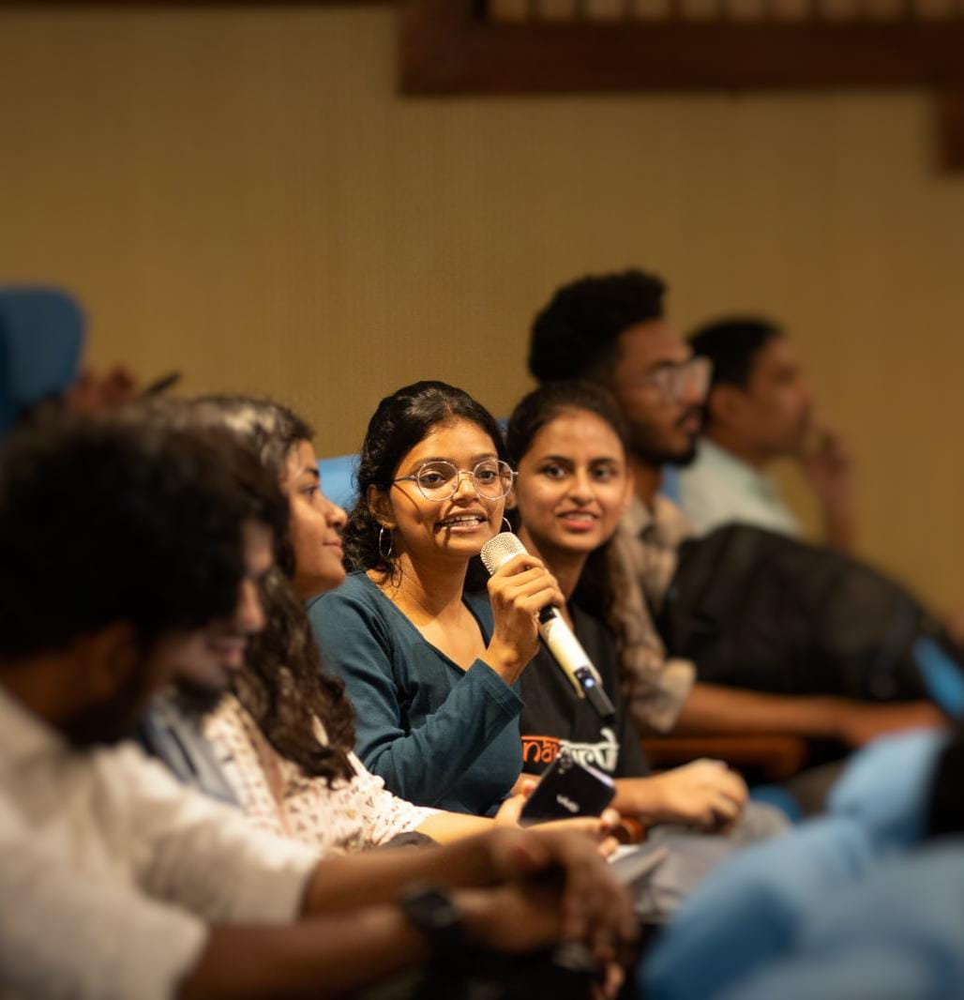

HELLO, I'M
MCA Student | Web Developer | Tech Enthusiast

Hi! I'm Komal, an MCA student at IGDTUW, Delhi. I have a background in Computer Applications and Software Programming. I'm passionate about technology, web development, and exploring new areas of computer science. I enjoy learning new skills, solving problems, and building creative projects. Apart from academics, I love photography, participating in debates, and exploring new opportunities.
1. Technical Growth: Continuously improve my programming skills and explore emerging technologies like AI and web development.
2. Problem-Solving: Strengthen my logical thinking, analytical abilities, and coding skills by working on real-world projects.
3. Communication & Leadership: Improve my communication, teamwork, and leadership skills through community participation, collaboration, and public speaking.